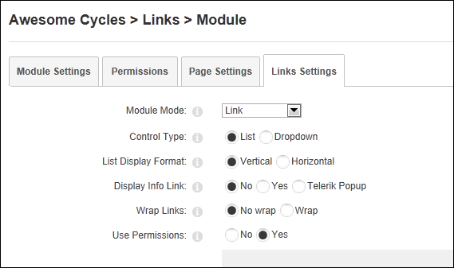

How to use or ignore the permissions set for individual links that have been manually added to a Links module.
Important. Applying this setting to a module with existing links may change the visibility of those links depending on the permissions that were selected when the links were added. The default permissions used when adding a new link is to set the link as visible to the Administrators role only. If permissions aren't used, then these links remain visible to all users who are authorized to view the module. However if permissions are applied at a later time, then these links will only be visible to Administrators.
